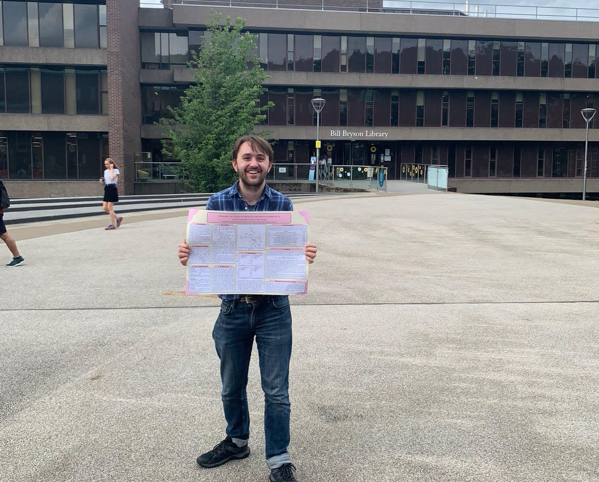

PhD (2022-)
I am currently undertaking a PhD at the University of Birmingham, supervised by Wessel Woldman and Samuel Johnson. My PhD focuses on the mathematical modelling of epilepsy using network-based metrics derived from EEG. My PhD has involved the following projects:
Treatment Effects in Epilepsy: A Mathematical Framework For Understanding Response Over Time
An internal collaboration with researchers at the University of Birmingham.
Aim: Assessing the robustness of networks to parameter changes in an associated dynamic network model -
modelling a dynamic response ("honeymoon effect") to epilepsy treatment.
Collaborators: Gwen Harrington, Leandro Junges, John Terry
Keywords: epilepsy, brain network model, honeymoon effect, brain network ictogenicity,
brain surgery, anti-seizure medication, network physiology
Status: Read our published paper
here.
Understanding the Prognosis of Epilepsy from Longitudinal EEG Data
A collaboration with researchers at the University of Melbourne.
Aim: To explore the long-term changes in epileptiform activity in relation to network-based
measures and anti-seizure medications.
Collaborators: Anita Dharan, Wendyl D'Souza (Melbourne)
Keywords: epilepsy, prognosis, network-based markers, EEG, ambulatory EEG, longitudinal data,
epilepsy medication, brain network models
Status: Ongoing.
EEG-Derived Networks and The Differential Diagnosis of Epilepsy and Functional Dissociative Seizures
A collaboration with researchers at Kings College London.
Aim: Assessing the usefulness of multi-channel network based markers from resting-state EEG
in differentiating between epilepsy and functional dissociative seizures, using nested cross-validated
statistical learning models.
Collaborators: Irene Faiman, Paul Shotbolt, Rachel Sparks (KCL)
Keywords: epilepsy, FDS, machine learning, differential diagnosis, network-based markers, EEG,
brain network models
Status: Ongoing.
Modelling Network-Based Perturbations to the Epileptic Brain Using Pseudospectral Methods
An internal collaboration with researchers at the University of Birmingham.
Collaborators: Catherine Drysdale, Samuel Johnson
Status: Ongoing.
Research Associate (2025-)
I am working part-time as a research associate with the ATMOSPHERE project, led from the University of Bristol. This project aims to develop a machine learning algorithm which can forecast epileptic seizures using physiological data from smart watches.
MMath Dissertation (2021-22)
My masters dissertation project, "Modelling the effect of testing on the spread of SARS-CoV-2" used SEIRS-type epidemiological models and aggregated data from Durham University's student lateral flow testing programme to model the potential effect of low-sensitivity, high-specificity testing and isolating on the spread of Coronavirus.